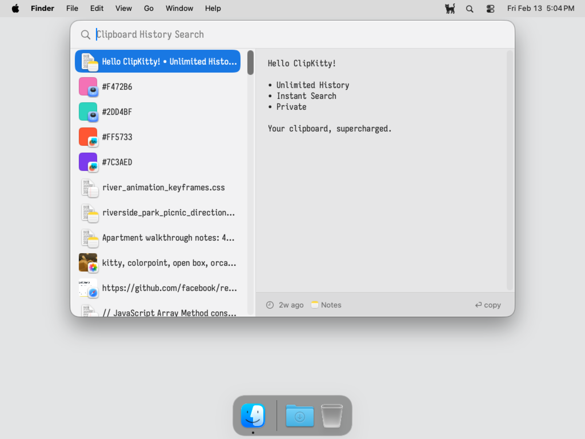
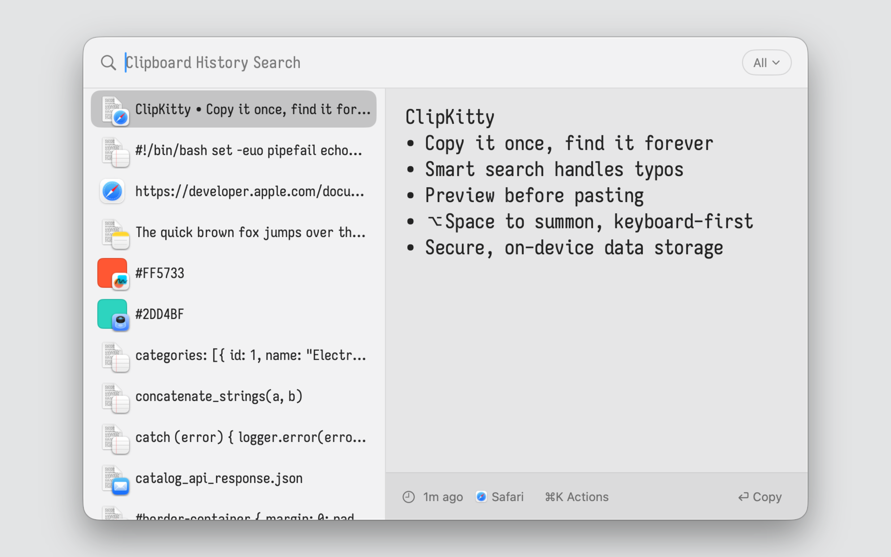
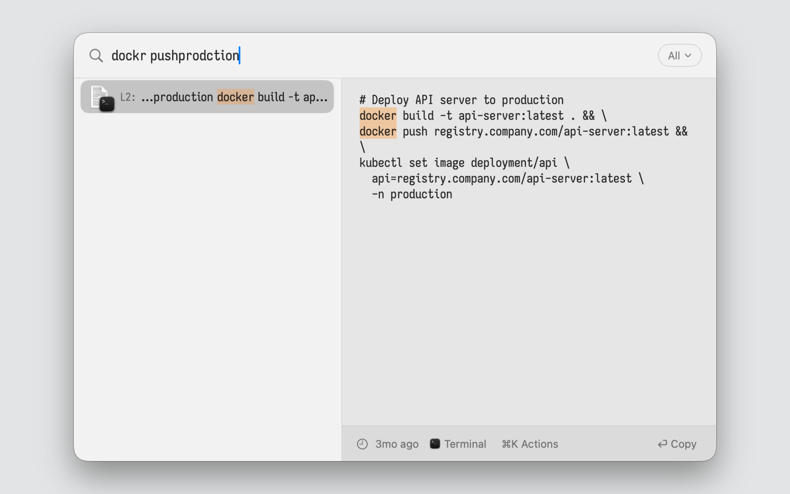
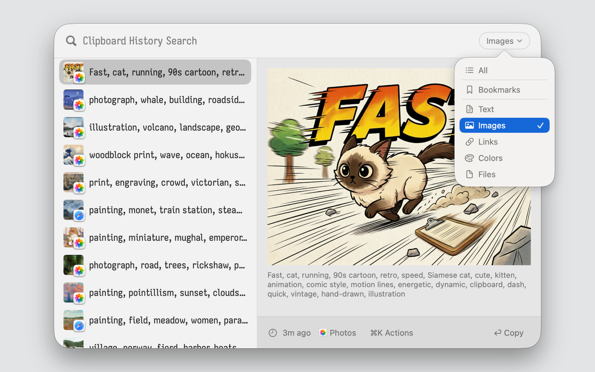

ClipKitty
Your clipboard history from day one. Searchable in milliseconds.
Unlimited history • Instant fuzzy search • Multi-line preview • Private

Why it exists
You copied that command last week. That document yesterday. That address three months ago. Your clipboard manager either forgot it, slowed to a crawl searching for it, or truncated half of it.
ClipKitty stores everything. Advanced fuzzy search means zero lag, whether you're filtering through ten items or ten million. Built for people who copy lots of things and need to find them again.
Why ClipKitty over alternatives?
- vs Maccy: Maccy caps at 999 items and slows down past 200. ClipKitty maintains unlimited history and scales to millions with no performance degradation. Plus, you get a live multi-line preview pane rather than waiting for hover tooltips.
- vs Raycast: Raycast truncates items and limits free history to 3 months. ClipKitty has no character limits and preserves history forever. It is also strictly offline; your clipboard never touches the cloud.
- vs Paste: No subscriptions, ever. Just a fast, local clipboard manager you own outright.
Features
- Unlimited History: Clipboard history that doesn’t forget, doesn’t truncate. ClipKitty stores it all while staying lightweight.
- Fuzzy search that scales: Type “improt” and find “import”. ClipKitty uses tantivy; the same infrastructure as production search engines. Results stay fast whether your history holds 100 items or 1,000,000.
- Live Preview: See full content instantly as you navigate. No truncation, no waiting for tooltips.
- Keyboard-First:
⌥Space to open, arrow keys to navigate, Return to paste.
- Privacy-First: Runs on-device and offline. No telemetry.
- Free & Open Source: Licensed under GPL-3.0. No subscriptions, no paywalls. Read the code, build it yourself, contribute.
Installation
Easy Install via Homebrew
If you have Homebrew installed, run:
brew install jul-sh/clipkitty/clipkitty
Manual Download
- Download the latest DMG from GitHub Releases.
- Drag ClipKitty to your Applications folder.
Getting Started
- Press ⌥Space to open your clipboard history.
- Type to fuzzy search.
- Use Arrow Keys to navigate and Return to paste.
Keyboard shortcuts
| Shortcut |
Action |
| ⌥Space |
Open clipboard history |
| ↑ / ↓ |
Navigate |
| Return |
Paste selected item |
| ⌘1–9 |
Jump to item 1–9 |
| Escape |
Close |
Building from source
git clone https://github.com/jul-sh/clipkitty
cd clipkitty
make
Requires macOS 15+ and Swift 6.2+.
Screenshots


